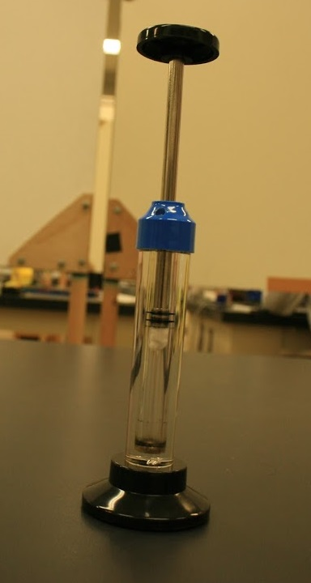

爆縮
水を少量入れた缶を熱し、水蒸気で満たした状態にします。
空気の流入を断ったうえで、これを急激に冷やすと、水蒸気が水に戻り、急激に気圧が下がります。
すると、内外の圧力差により缶がつぶれます。
このように、水の状態変化を利用した実験で、派手につぶれるので面白いですが、初めてやるときはかなり怖い実験です。

ティーバッグ燃焼
空のティーバッグに火をつけて上昇気流を起こし、ティーバッグの内側に吹き込むようにします。
うまくいけば2mほど上昇しますが、気流がティーバッグ内に誘導されないと上昇しないことがあり、作業の簡単そうな見た目の割には注意点の多い実験です。
アルコール爆発
上部を切り取って開けた空き缶にアルコールを吹き入れ、上に紙コップを被せます。
アルコールが気化して缶内の空気と混ざり合ってから着火すると、一気に引火して紙コップが飛び上がります。
アルコールが多すぎると蒸発しきらず、少なすぎても爆発が小さくなってしまうため、加減が難しい実験です。
真空砲
筒に、バドミントンのシャトルなどの弾となるものを入れ、両端を閉じて空気を抜きます。
充分に気圧が下がったところで片方の蓋を外すと、音速に近いほどの速さで勢いよく空気が流入します。
この空気に押され、弾は反対の端から飛び出します。
出口に缶などを置いておけば、当たった衝撃でへこみます。
派手な音と威力を出すので、物理部の実験の看板として受け継がれてきました。